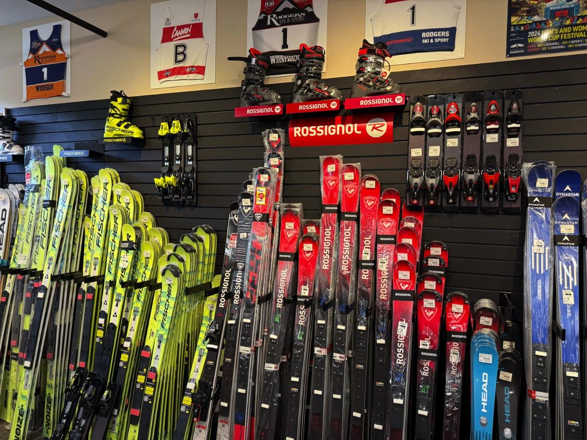
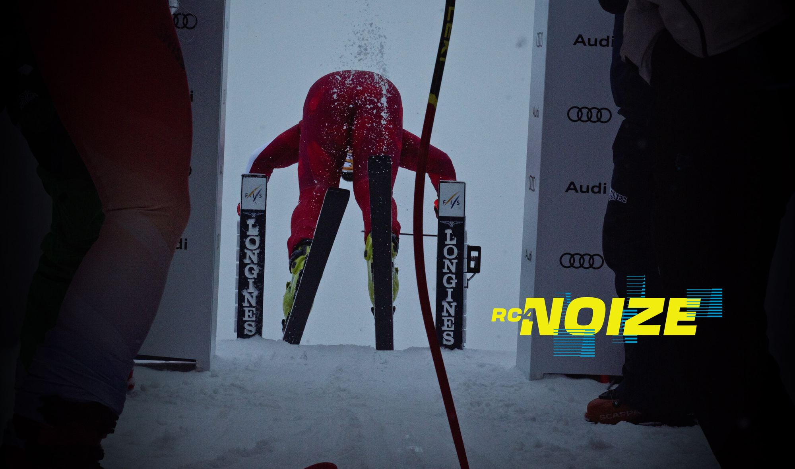
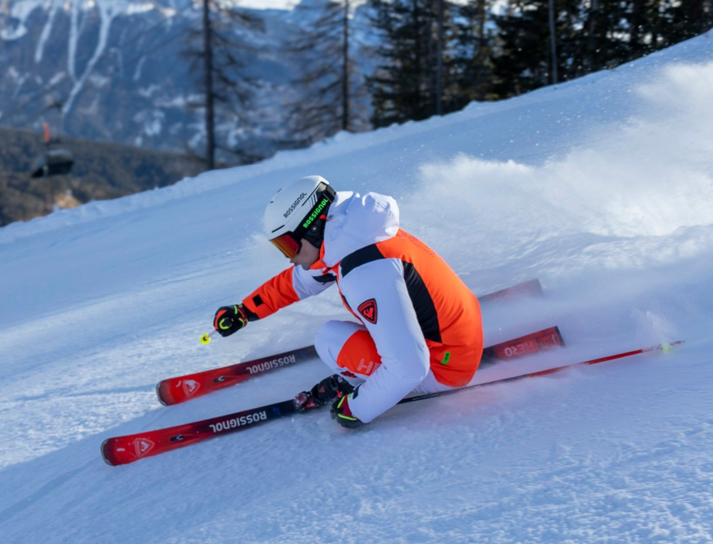
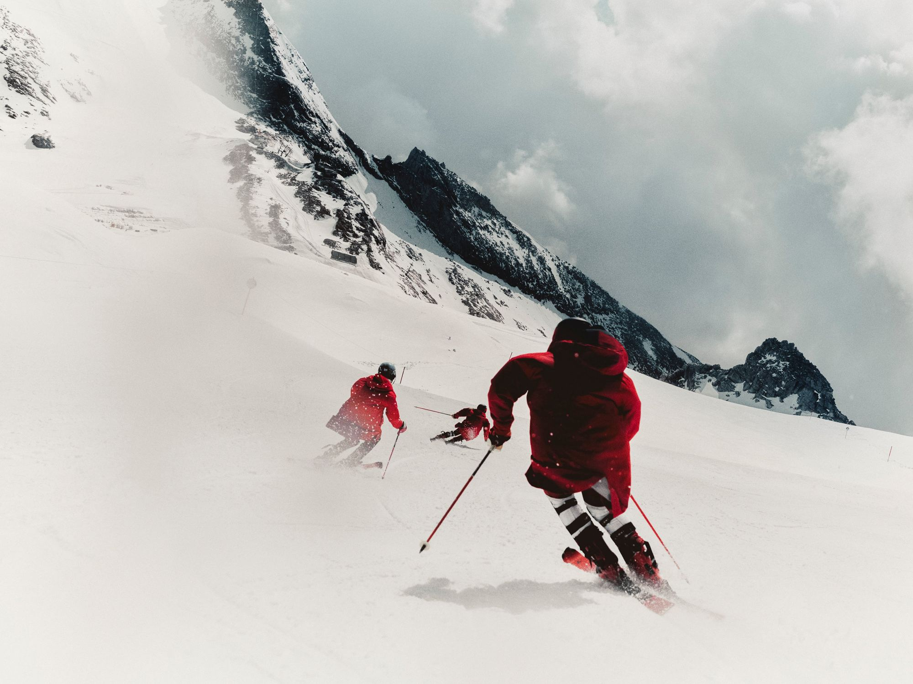
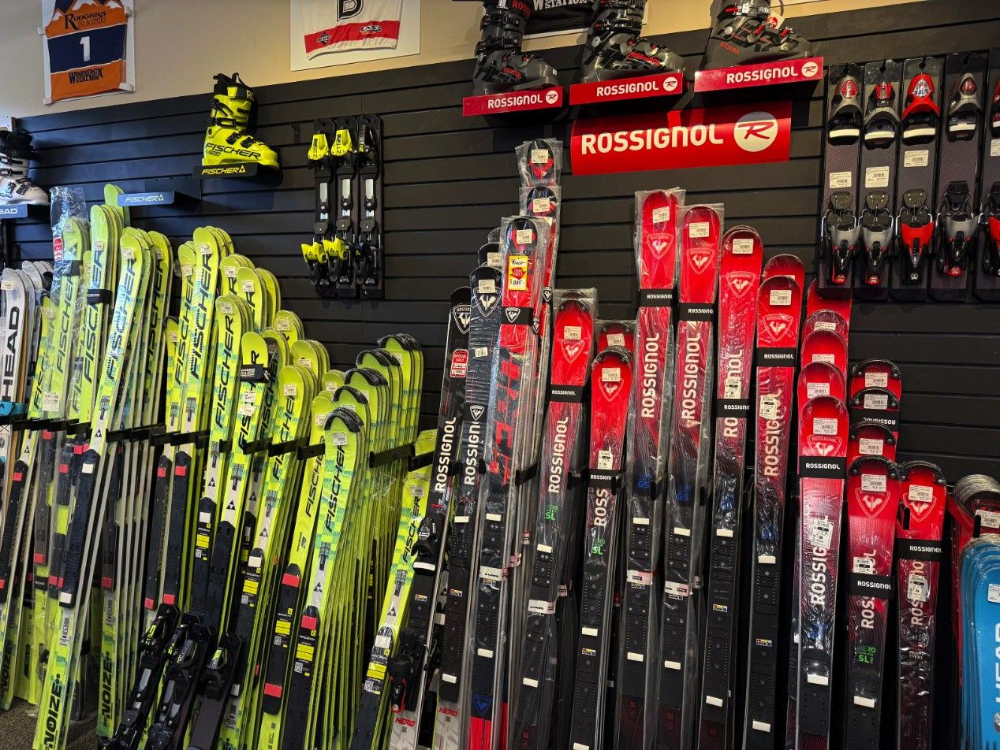

Seven race brands under one roof: Atomic, Van Deer, Head, Rossignol, Fischer, Dynastar and Salomon. Race skis, boots, bindings and full FIS and USSA prep, whether you’re gate training or chasing PRs.
The race wall
Every race brand we carry, in one spot at the Lincoln store, with race skis and race tunes in Scarborough too.

Lincoln race wallSlalom, GS, speed and junior race skis from all seven brands, with race bindings and plates. Salomon’s race line returned to the U.S. market in 2026 and Rodgers is, in the shop’s words, the only East Coast dealer. Van Deer, the Red Bull ski brand, is on the wall in Lincoln.
The race department in Lincoln preps skis on a Montana Crystal Rock robot that makes the ski flat before applying a race-specific structure used by World Cup athletes, and waxes with the Wax Future for base saturation without the heat of a hot box. Two prices on every line: one for gear bought at Rodgers, one for gear bought elsewhere.
Race ski service
| Service | Rodgers ski | Outside ski |
|---|---|---|
| Podium ClubSeason ski tuning, one ski, unlimited, includes prep | $350/pair | n/a |
| FIS race ski prepShaped sidewalls, World Cup structure, Trione edges, race wax | $200 | $250 |
| USSA race ski prepSidewall pull, World Cup structure, belt edge and base, race wax | ask | $200 |
| Junior race ski prep (U10/U12)Stone grind flat, belt edge angles, one wax cycle | $60 | $75 |
| Race ski grind onlyFlat ski, World Cup structure, no edge bevels | $85 | n/a |
| Race day tuneTrione edges, race wax; sidewall must be cut to qualify, no grind | $65 | $75 |
Race binding service
| Service | Rodgers | Outside |
|---|---|---|
| Binding install, new pre-drillMount, test binding and lifters (parts not included) | $25 | $50 |
| Binding transfer, pre-drillRemove, remount, test | $50 | $75 |
| Race plate optimizationDrill plate, mount, test | $100 | $150 |
| Binding liftersManufacturer specific, measured for optimization | $100 | $150 |
Scarborough
| Service | Price |
|---|---|
| Race tune | $100 |
| Shell heat mold | $50 |
| Liner heat mold | $40 |
| Punch out | $25 each |
| Spot grind | $15 each |
Full FIS and USSA prep is done in Lincoln.
Race boot service, from the FIS setup to lifters and heaters, is on the Boot Lab page. Race boot purchase does not include service. Mounting is not included with race skis.
Race staff picks
All staff picks →
Atomic Redster 130 World Cup Race Boot
“The Atomic Redster 130 World Cup Race Boot offers a race-focused shell and narrow World Cup fit that delivers exceptional power, precision, and edge control for aggressive skiing.”

Atomic Arc 735 RS
“One of the most enjoyable mid-radius carvers on the market in the X9S — the limited edition 1990-91 Arc graphic will make all your friends jealous and be a conversation starter in the lift line.”

Fischer
Rossignol
AtomicBrand imagery courtesy of Atomic, Fischer and Rossignol.
Coaches, parents, athletes
Whether you’re an athlete, coach, parent or recreational skier, we have the equipment and the knowledge you need to enjoy your day and perform your best. Race teams, ski clubs and school programs: talk to the Lincoln store directly and we’ll set gear and bench time aside.
